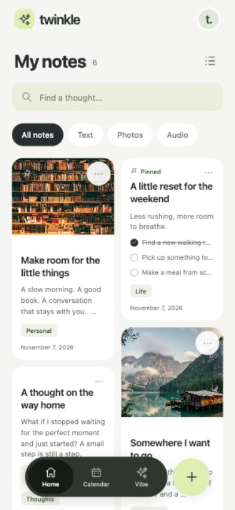
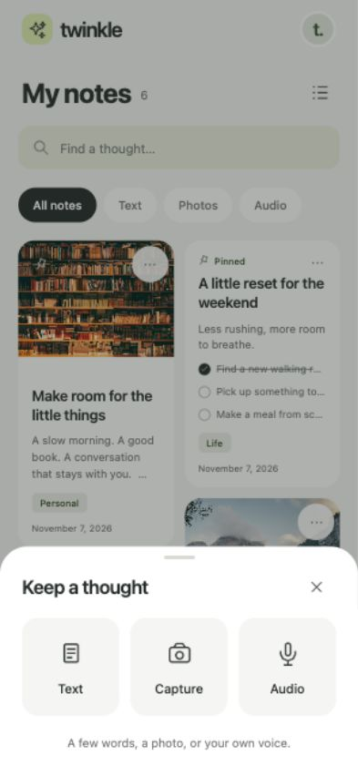
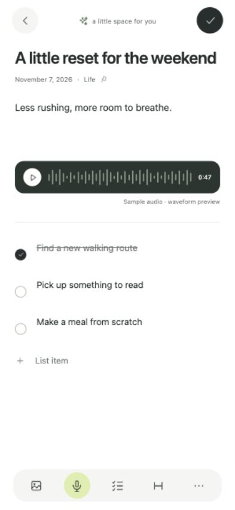
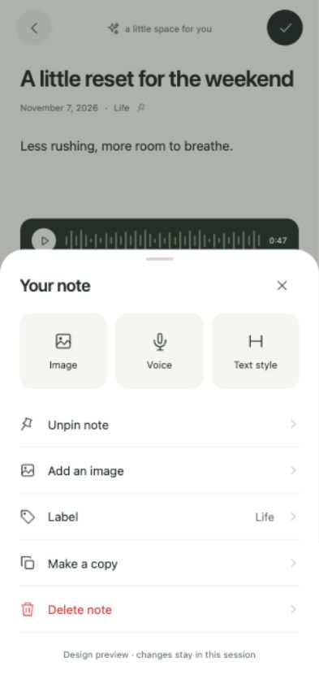
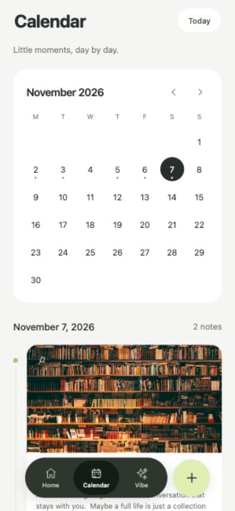
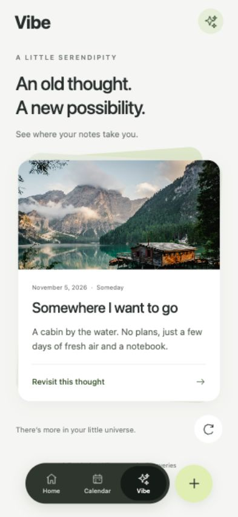
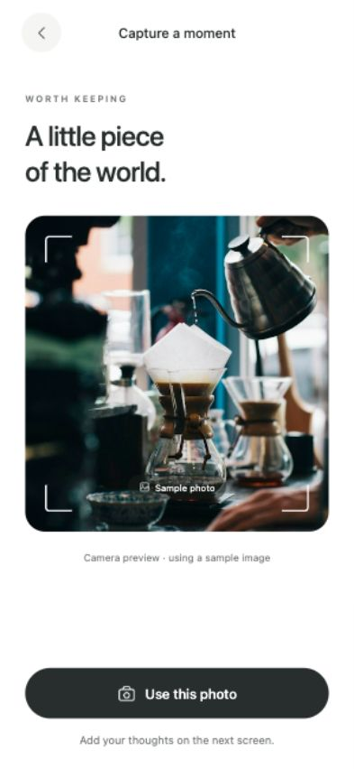
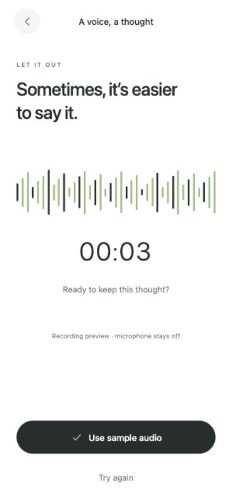

Twinkle · screen preview
TWINKLE · DESIGN PREVIEWA little space for your thoughts.
Sample screens built from your references. White editors, a card-based home, and a floating Home / Calendar / Vibe navigation. The preview uses temporary sample notes.
Open the interactive preview →
01 · My notes
02 · Keep a thought
03 · Note editor
04 · Note options
05 · Calendar
06 · Vibe
07 · Capture
08 · Audio